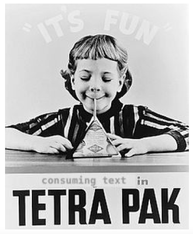

Coding Ideas / Plans
Doable in the near future:
- Random Movie Picker with "heavy" / "non-heavy" category: Build own database with movies we own / want to watch and add parameters such as: Year of publication, Cast, Genre (the common ones). Then, also to be added: A binary heavy/non-heavy parameter: This value is rather unique to our / my interpretation of heavy so that's why I can't just use the already existing random movie pickers that have similar options. The idea would be that one could input certain constraints such as "I want the movie to be from the 90ies or later" and then also filter out the "heavy" one. [[This is of course mainly to practice OOP]]
Doable once I have more skills:
-
TeTra (this idea was developped in the frame work of a lecture at uni about web accessibility and how language technologies can help lower the access barriers.)

TeTra (short for Text Transformation) is an app/tool that transforms 'flat' text such as a scientific article, a written tutorial, any type of instructions| into more digestible portions, restructuring it, spacing it apart, adding additional information and comment options, offering automatic summarization and topic extraction.
In a little more detail: Given a text, when activated, TeTra will:
- Access the structure in the text to space out paragraphs or even put them in frames/bubbles. The reasoning behind this is to reduce the immediate confrontation with a lot of information.
- Make these bubbles movable; an overall drive hinter TeTra is to be able to 'move the content packages' around easily and safely, without losing track of where they belong in the text (in other words, as the ad goes, "protecting what's good").
- Automatically save in between versions; the user should feel free and not worry about losing any information or 'destroying' the structure of the document to such a degree that it becomes unreadable. Instead, they should be able to take the text transformation to whatever level that they feel most comfortable with. To make this possible, earlier versions have to be stored regularly.
- Let the user manually adjust the way of highlighting/structuring the text; all visualizations and restructuring offered by TeTra should be manually adjustable.
- Extract 'topics' of the individual paragraphs and imply with background colors when two paragraphs concern the same or a similar topic (topic modelling). The user has the option to automatically re-order the text in terms of these topics.
- Add a comment bubble/frame next to every text frame, where the user can add a comment (it should be possible to not only write, but also record an audiocomment). This comment bubbles move with 'their' text bubbles.
- Let the user manually mark the bubbles in a way to sort them: This could be mark them with certain letters (maybe "D" for "detailed" or "E" for "here's an example"), or numbers, or symbols. This too would then be saved and could be used as a sorting factor. (The idea is that the text can be sorted and structured in different ways as the user is reading it, depending on the current interest of the user).
- Offer additional information on named entities (through Neural Entity Recognition) and automatically link other information sources.
- Restructure the text to make it more readable: E.g., when encountering a list (implied by, say, "such as"), TeTra automatically extracts the items and generates a visually consumable list.